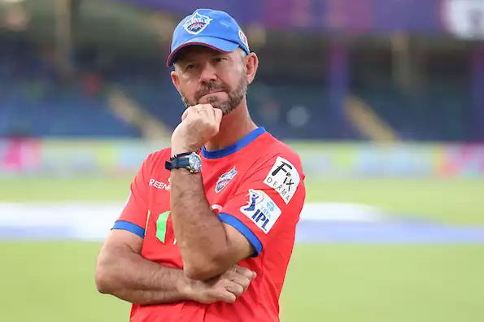
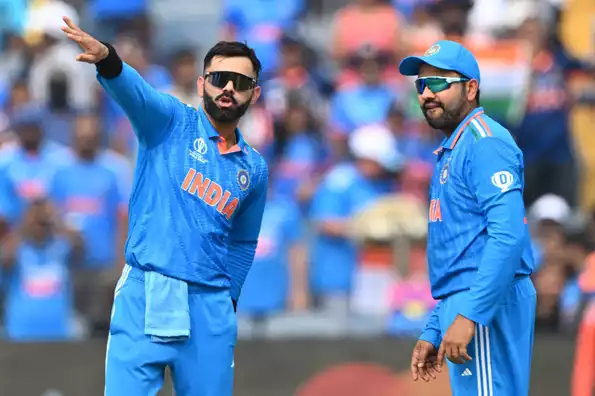

Blog 1:-
Ponting distances himself from India head coach role
Ricky Ponting, the head coach of Delhi Capitals in the IPL, revealed that he was approached to take over from Rahul Dravid as the next head coach of the Indian men's team but said it didn't fit into his "lifestyle right now".Ponting's name is one of several being floated around, along with Justin Langer, Stephen Fleming and Gautam Gambhir,for the India head coach's role, with Dravid's tenure set to end after the T20 World Cup. The deadline for the applications is on May 27.
- 1. "I've seen a few other names thrown about as well. Justin Langer's name got thrown in yesterday, Stephen Fleming's name has been thrown about a little bit. Gautam Gambhir's name has been thrown around a little bit the last couple of days as well. But I think it'd be unlikely for me just on the reasons that I've given there," he said. Ponting, who has had his family with him during his coaching stint with DC, added that he did tell his son Fletcher about the job offer.
- 2. "My family and my kids have spent the last five weeks over at the IPL with me and they come over every year and I had a whisper to my son about it, and I said, 'Dad's been offered the Indian coaching job' and he said, 'Just take it dad, we would love to move over there for the next couple of years'" revealed Ponting."That'show much they love being over there and the culture of cricket in India, but right now it probably doesn't exactly fit into my lifestyle."
Blog 2:-
India to play only one warm-up game before T20 World Cup 2024
India will only play one warm-up game ahead of the Twenty20 World Cup in the US and the West Indies, marking a departure from their previous preparations for the ICC events in which they, invariably, played two warm-up matches. The exact reason for the solitary game is a subject of speculation, but Cricbuzz understands that the Board of Control for Cricket in India (BCCI) has insisted on holding the match in New York, where the team will be based.
- 1. The organizers, the International Cricket Council (ICC) and Cricket West Indies (CWI), are believed to have proposed a warm-up game in Florida. However, the Indian players, fatigued from extensive travel and the highly demanding Indian Premier League (IPL), are reluctant to fly from New York to Florida and back for a single practice match. India's warm-up matches have high a commercial value and are always televised due to ample monetization opportunities.
- 2. In 2015, an India-Australia warm-up match in Adelaide was broadcast in India but not in Australia. The ICC has indicated that the schedule will be released in the coming days. Most other teams, except Pakistan and England, are set to play two warm-up games each.